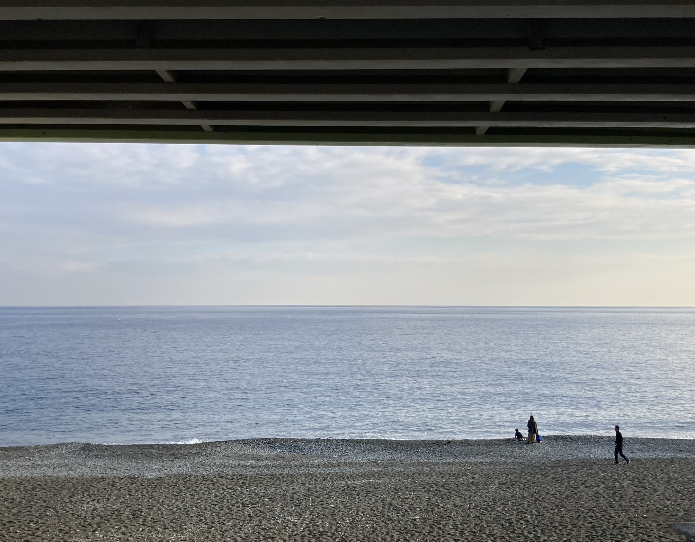
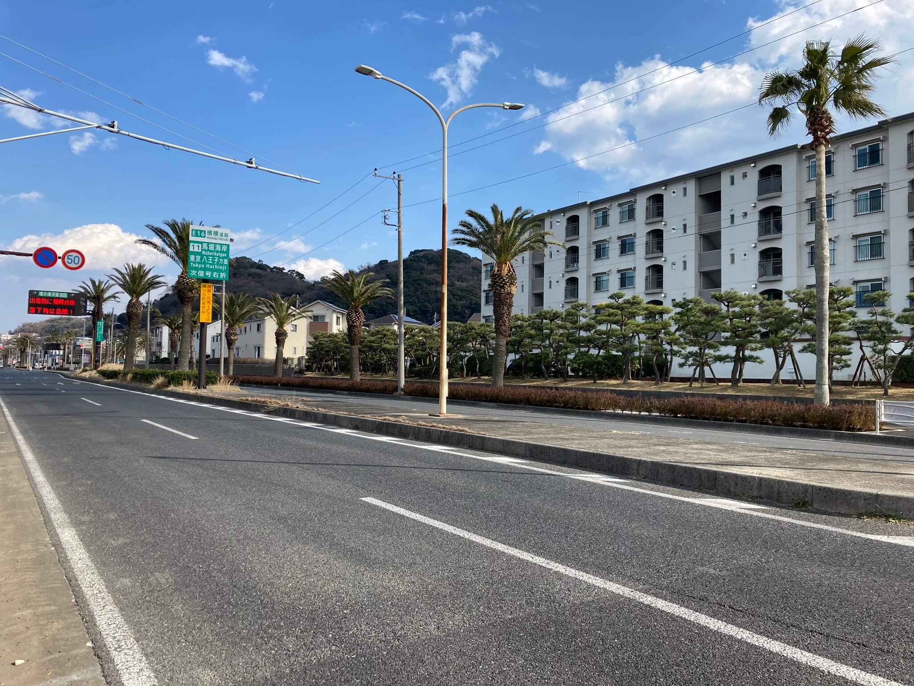
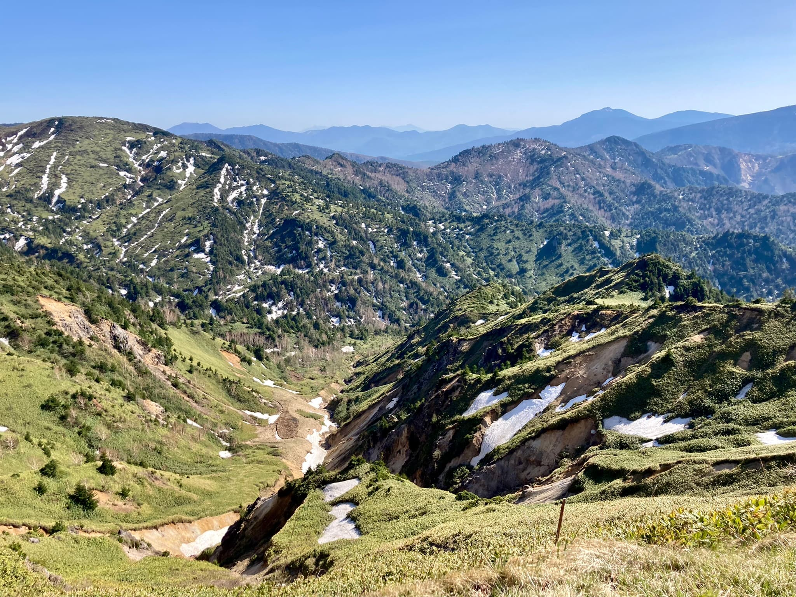
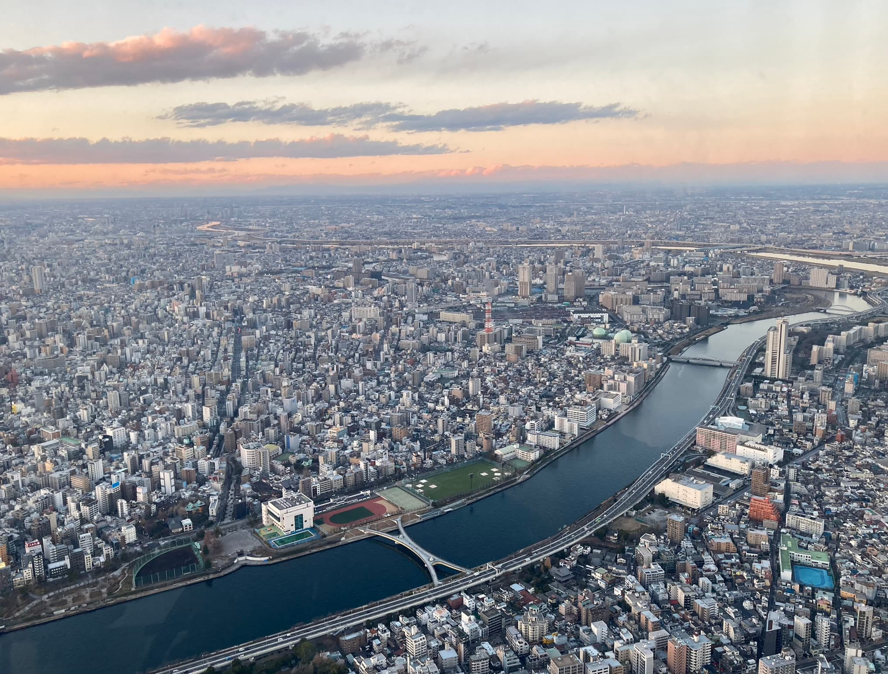
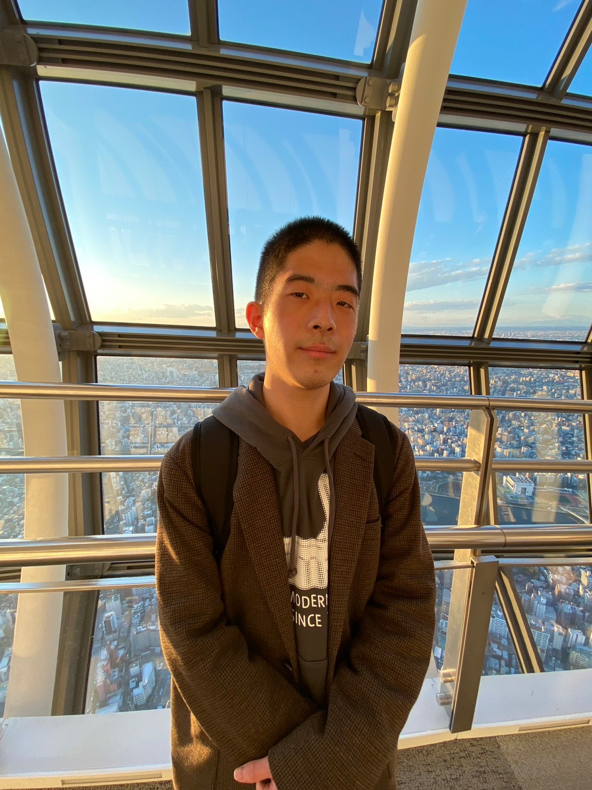
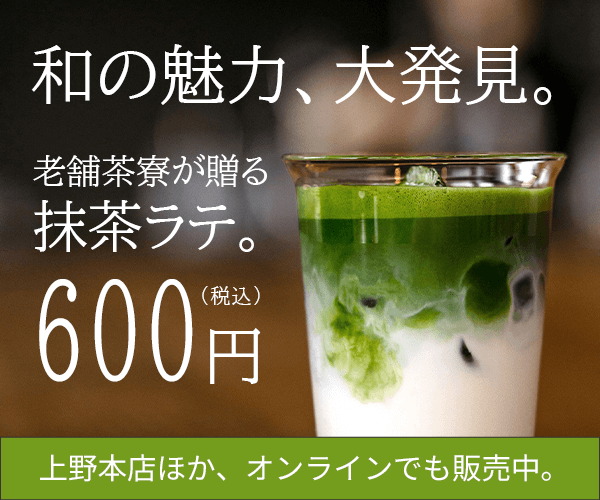
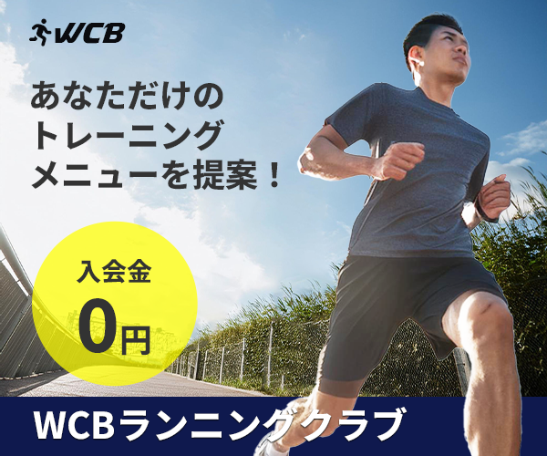
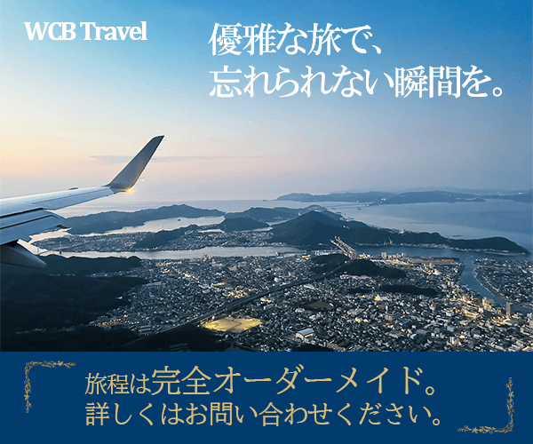
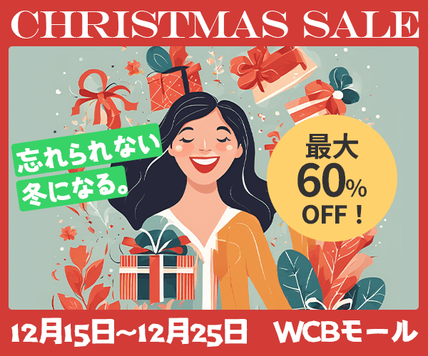
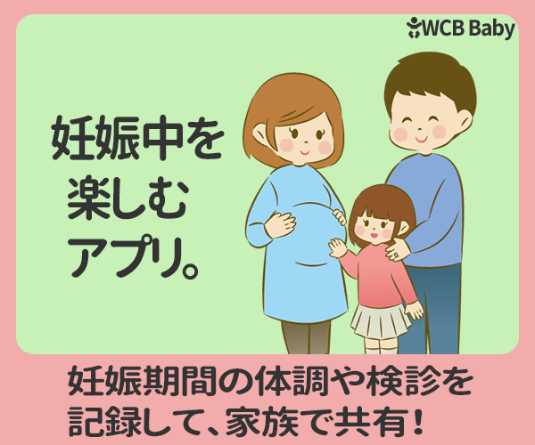

リサーチ・取材
技術者へのヒアリングや人物インタビュー、資料調査・事実確認を通じて、情報を理解・整理します。






東京都在住の28歳、
清水 風雅(しみず ふうが)と申します。
現在はインフラ系企業に勤務し、
現場作業や工程調整など、様々な業務を経験してきました。
その後、合併企業の衛星通信事業案件にて、
Web制作やデザインの経験を活かした商材PRにも携わりました。
Web制作ではHTML/CSS、JavaScript、WordPressのほか、
React・TypeScript・Tailwind CSSを使用したLP制作を経験。
Webだけでなく、メールマガジン、チラシ、マニュアルなど、
様々な形で情報を届ける仕事に取り組んできました。
幼い頃から文章を書くことが好きで、
現在は広報・PRやWebメディア編集など、
これまでの経験とライティングを活かせる仕事へ
経験を広げていきたいと考えています。
個人でも散策を題材にした記事や
インタビュー記事の制作に取り組んでいます。
よろしくお願いいたします。
保有資格
・Webクリエイター能力認定試験 エキスパート
・Photoshopクリエイター能力認定試験 スタンダード
・ITパスポート試験
・普通自動車第一種運転免許(AT)
技術者へのヒアリングや人物インタビュー、資料調査・事実確認を通じて、情報を理解・整理します。
記事の企画・構成から執筆、推敲、写真選定、公開まで。noteや「さんたつ」で散策記事などを制作しています。
専門商材の特徴や顧客の課題を整理し、伝える内容や構成を検討。LPやメールマガジンなどの販促コンテンツを制作します。
WordPressによるページ更新・フォーム設定、HTML/CSSによる制作・修正に対応。サイトの公開・更新も経験しています。
FigmaやPowerPointを使用し、情報の見やすさや伝わりやすさを意識して、チラシ・会社案内・マニュアルなどを制作します。
技術・営業・管理部門との連絡調整、資料回収、内容確認、スケジュール管理などを担当してきました。
WordPress / MailPoet / Contact Form 7 / HTML / CSS / JavaScript
Figma / PowerPoint / Photoshop
Git / GitHub / Netlify
Excel / Excel VBA
・Photoshopクリエイター能力試験の勉強を開始。
・Photoshopの操作に慣れてきたので、何か仕事に繋げたいと思い、Web制作の仕事を志す。
・Webクリエイター能力試験の勉強を開始。デザインの基礎、HTML、CSSを学ぶ。
・ドットインストールを利用し、アプリサイト、ECサイトのコーディングを行う。
・Udemyにて、Photoshopを使用した複数サイトのデザイン方法を学ぶ。
・Photoshopクリエイター能力試験 スタンダード合格。
・Udemyにて、jQueryの基礎を学ぶ。
・Webクリエイター能力試験 エキスパート合格。
・Webサイト「未経験からWebデザイナーへ！」の「無料コーディング練習所」にて、 Visual Studio Code、Figmaの使用方法や、flexboxやWebフォントの設定など実用的なコードを学び、複数サイトのコーディングに触れる。
・保守性の高いCSSの設計：BEM、Saasに触れる。（引き続き学習中）。
・テックアカデミー「Webデザイナーコース」受講。 レスポンシブデザインのコーディング方法、バナー制作といった、これまでの学習で得られていなかった知識の補充とアウトプットを通じ、作品を制作。
・レンタルサーバーで各ポートフォリオサイトを公開。細かな挙動を確認しながら修正、改善を実施。
・新たにもう1作のサイトを制作し、実用性を意識したシンプルなデザインを反映。
・Figmaを用いてコーポレートサイトデザインを制作。複数のWebサイトデザイン模写も実施し、デザイン力の強化を図る。
・合併企業の衛星通信事業案件にアサイン。メール、電話連絡、提出書類の回収・整理、スケジュール調整などを担当。
・Web制作の幅を広げるため、GitやWordPressなどの学習に取り組む。
・JavaScriptを使用したWeb主要パーツのコーディングの復習を行い、2作目ポートフォリオにはGSAPによるローディングアニメーション、 3作目には記事の手動更新機能やアコーディオン表示を実装。その後、3作目はWordPress化を実施。
・Githubを基礎から学習し、Netlifyとの連携、ブランチ、リポジトリ管理、デプロイまでを経験。 開発環境の模索を通じて、VSCode for WebからGitHub Pagesへの変更、プッシュも習得。
・Pug（基礎構文のみ）、Sass（SCSS：カッコ記法）を導入し、BEM設計を取り入れたポートフォリオの再編集を実施。
・WordPressのカスタマイズでは、The Loopを用いた投稿一覧・詳細・カテゴリページの構築、Local環境構築、カスタムフィールド、ページネーションの実装、 twentytwentythreeテーマのカスタム、Git BashによるGitHub運用の流れも学び、READMEやQiitaでのアウトプットも行う。
・衛星通信関連サービスの商材PR案件が始動。
・Web制作やデザインスキルを活かし、LP、チラシ、会社案内などを制作。
・技術者への取材を重ねながら、お客様向けマニュアル等も制作。
・WordPress MailPoetを使用したメールマガジンの制作・配信を開始。
・商材について理解しながら文面を作成し、購読者リスト管理、WordPress更新、サーバー設定なども経験。
・noteでの執筆を再開し、散策記事やインタビュー記事を制作。
・「さんたつ by 散歩の達人」への記事投稿を開始。
個人で制作したWebサイトや、学習の一環で制作したWebデザイン作品を掲載しています。
個人で取り組んでいる散策記事やインタビュー記事を掲載しています。 noteや「さんたつ by 散歩の達人」にて公開しています。
デザインスキルを磨くため、バナー制作に取り組んでおります。
女性向けシャンプーのバナー
計3,4時間で制作。ターゲット層に10～20代の女性を想定し、手書きフォントで親近感が沸くものになるよう表現。 また、"商品を使用した喜び"を表現すべく、女性の笑顔を大きくフォーカス。髪の毛の切り抜きに苦戦したので、繰り返し実践して上達していきたいです。

抹茶ラテのバナー
計2,3時間で制作。"和"＝明朝体のイメージで、BIZ UDP明朝を選択。 また、若い世代にも注目させることを目的とし、"落ち着き"を意識しつつも目を引くキャッチコピーを配置しました。また、食品の広告のため、商品を最も大きくフォーカスすることを意識しました。

スポーツクラブのバナー
計2,3時間で制作。フォントは、スポーツ系の広告で印象が強いゴシック体を使用しました。 また、被写体を切り出し枠外へ飛び出させることで躍動感を演出しました。ターゲット層は30代から40代の男性を想定し、落ち着いた色合いを設定しました。

旅行会社のバナー
計1時間ほどで制作。ターゲット層を、40代以上の比較的富裕層であることを想定し、 高級感が演出できるよう落ち着いたトーンの紺をメインカラーに、フォントカラーをゴールドに設定。上部のロゴ、キャッチコピーの視認性を考慮し、背景にグラデーションをかけています。

ショッピングモールのバナー
計1時間ほどで制作。クリスマスセールの宣伝として、赤や緑のイメージカラーで内容を膨らませました。 英文フォントや、絵本のような個性的なフォントを使い、主に若年層に届くよう目を引くレイアウトを発想しつつ、イラストを使用し、喜びに溢れた様子を表現しました。

赤ちゃんアプリのバナー
ピンク色をメインカラーとし、フォントは丸ゴシックを使用するなど、 「赤ちゃん」から連想する柔らかさをイメージしつつも、ターゲット層が大人であることを考慮し、真新しく興味を惹くような、かつ、ユーザーに伝わりやすいデザインを意識しました。
ご連絡は、Gmailからお願いいたします。その他、X、note、Wantedlyにて情報を発信しています。